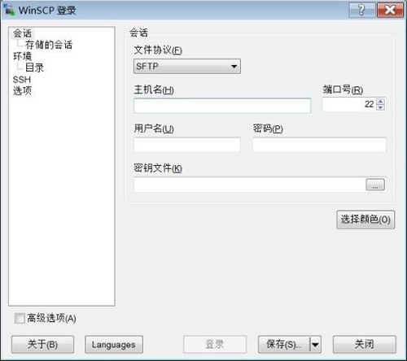

Linux LAMP环境搭建的前期准备
LAMP 环境搭建是较为复杂的 Linux 实验，在进行真正的环境安装之前，需要做一些细致的准备工作，以避免在安装过程中出现不必要的错误。我们需要进行的准备工作有以下几步。
获取源码包
我们已经知道 RPM 包是在 CentOS 的安装光盘中保存的，但是源码包需要去互联网下载。我们此次完成 LAMP 环境搭建需要 19 个软件包，这是目前较为完善和常用的 LAMP 环境搭建方式。这些软件包的下载地址如表 1 所示。这些下载地址只是参考，如果有失效的，则请自行搜索。大家可能已经发现，我们下载的软件包不全是最新的版本，这主要是为了和 php-5.4.25.tar.gz 这个软件包进行匹配。当然，php-5.4.25.tar.gz 也已经不是最新版本的 PHP 了，不过在计算机领域永远不是最新版本的软件就是最好的，新软件虽然有了更多的功能，但是这个软件并没有经过实际工作的检验，它不一定稳定，也有可能会有 Bug；反而版本较低的、但是经过足够的实践检验的软件会更受开发者的欢迎。
Linux 就是这样的，CentOS 6.x 自 2011 年发布以来，经过多年的补充和完善，目前才逐渐得到个人使用者和企业使用者的认可。PHP 同样如此，目前 php-5.4.25.tar.gz 依然是使用最多的 PHP 版本，所以我们依然使用 php-5.4.25.tar.gz 来介绍 LAMP 环境的搭建。
把软件包传送到Linux服务器上
我们可以直接把软件包下载到 Linux 服务器上，也可以先下载到本地 Windows 中，再上传到 Linux 服务器中。如果是先下载到本地 Windows 中，再上传到 Linux 服务器中，那么需要利用网络文件服务器来进行数据的传输。但是我们现在还没有学习 Linux 中的文件服务器（如 FTP、Samba 或 NFS），所以我们在这里介绍一款名为 WinSCP 的软件。WinSCP 是在 Windows 中安装，使用 SFTP 协议向 Linux 服务器传递文件的工具。它的特点是使用简单、图形化操作，而且数据传递过程是加密的，较为安全，是 Windows 和 Linux 之间进行数据传递的常用软件。WinSCP 第一次启动的界面如图 2 所示。

图 2 WinSCP启动界面
在启动界面的“主机名”文本框中输入 Linux 服务器的 IP 地址，如 192.168.0.210，在“用户名”文本框中输入 Linux 的用户名，在“密码”文本框中输入正确的密码，单击“登录”按钮，就会见到如图 3 所示的界面。

图 3 WinSCP传输界面
在这个工具中，左半部分是 Windows 系统中的文件，右半部分是 Linux 服务器上的文件。如果需要从 Windows 向 Linux 传递什么文件，则只需找到这个文件或目录，从左半部分拖拽到右半部分即可；反过来就是从 Linux 传递文件到 Windows 中，非常简单。
那么，我们应该把软件放置在 Linux 服务器的什么位置呢？Linux 中的 /usr/local/src/ 目录是系统默认的放置下载软件源代码的位置，所以我们就把搭建 LAMP 环境所需的所有软件包都传递到这个位置，传递完成后查看一下，如下：
[root@localhost ~]# ls /usr/local/src/
apr-1.4.6.tar.gz jpegsrc.v6b.tar.gz memcache-3.0.8.tgz
pcre-8.34.tar.gz
apr-util-1.4.1.tar.gz libmcrypt-2.5.8.tar.gz memcached-1.4.17.tar.gz
php-5.4.25.tar.gz
freetype-2.3.5.tar.gz libpng-1.2.31.tar.gz mhash-0.9.9.9.tar.gz
phpMyAdmin-4.1.4-all-languages.tar.gz
gd-2.0.35.tar.gz libxml2-2.9.1.tar.gz mysql-5.5.23.tar.gz
zlib-1.2.3.tar.gz
httpd-2.4.7.tar.gz mcrypt-2.6.8.tar.gz ncurses-5.9.tar.gz
[root@localhost ~]# ls /usr/local/src/ | wc -l
19
安装编译工具
源码包都是用 C 或 C++ 语言编写的，而且需要在本机编译之后才能正确安装。在 Linux 中，C 语言的编译器是 gcc，C++ 语言的编译器是 gcc-c++。在安装源码包之前，需要确认这两个编译器是否存在。命令如下：
[root@localhost ~]# rpm -qa | grep gcc
libgcc-4.4.6-4.el6.i686
gcc-4.4.6-4.el6.i686
[root@localhost ~]# yum -y install gcc-c++
如果 Linux 服务器可以正常连接互联网，那么这条 yum 命令是可以直接使用的，不用进行任何配置与修改。只是 yum 会去连接 CentOS 的官方服务器，这台服务器在国外，速度可能较慢。如果 Linux 服务器不能正常连接互联网，则也可以使用本地光盘作为 yum 源。安装完成后再查询一下，如下：
[root@localhost ~]# rpm -qa | grep gcc
gcc-4.4.7-3.el6.i686
libgcc-4.4.7-3.el6.i686
gcc-c++-4.4.7-3.el6.i686
关闭RPM包安装的apache和mysql
我们在生产服务器上是不会既安装 RPM 包的 apache，又安装源码包的 apache 的。但是为了教学需要，有时需要安装这两种包的 apache。我们现在需要停用 RPM包安装的 apache 和 mysql，命令如下：
[root@localhost ~]# service httpd stop
[root@localhost ~]# service mysqld stop
#停止apache和mysql服务
[root@localhost ~]# chkconfig httpd off
[root@localhost ~]# chkconfig mysqld off
#关闭apache和mysql的自启动
关闭防火墙和SELinux
在生产服务器上，防火墙是不能直接关闭的，而是需要设置防火墙允许 80 端口（apache）、3306 端口（mysql）和 11211（memcache）端口访问的。但是目前我们还没有学习防火墙，所以只能暂时关闭它了。关闭命令如下：[root@localhost ~]# setup
在图 4 所示的界面中选择“防火墙配置”，进入防火墙配置界面。图 4 setup界面
在图 5 所示的界面中，把“启用”前面的“*”去掉，选择“确定”保存，默认防火墙规则就会被关闭。

图 5 关闭防火墙
再查询一下防火墙规则：
[root@localhost ~]# iptables -L
Chain INPUT (policy ACCEPT)
target prot opt source destination
Chain FORWARD (policy ACCEPT)
target prot opt source destination
Chain OUTPUT (policy ACCEPT)
target prot opt source destination
#默认filter表中的三条链中的规则都是空。防火墙已经被关闭了
[root@localhost ~]# vi /etc/selinux/config
#把 SELINUX=enforcing改为 SELINUX=disabled
[root@localhost ~]# shutdown -r now
#重启Linux系统
关闭不必要的服务
接下来需要关闭我们不需要的服务，这既是服务器的必须优化步骤，也会使我们在 LAMP 环境搭建过程中的报错可能性大大降低，所以建议大家进行这一步服务优化。具体方法就是使用 ntsysv 命令把不需要的服务前面的“*”去掉，然后重启 Linux 服务器。具体哪些服务是必须启动的，哪些服务是不必要的，大家可以参考《Linux常见服务类别及功能》。批量解压源码包
我们需要安装 17 个源码包，如果一个一个地解压缩实在太麻烦了，那么我们写一个小的 Shell 脚本，批量进行解压缩。命令如下：
[root@localhost ~]# vi tar.sh
#建立解压缩脚本
#! /bin/bash
#标称是 Shell脚本
cd /usr/local/src/
#进入保存源妈包的目录
ls *.tar.gz > /usr/local/src/ls.log
#把所有以.tar .gz结尾的文件名覆盖写入ls.log文件
ls *.tgz >> /usr/local/src/ls.log
#把所有以.tgz结尾的文件名追加写入ls.log文件
file=$(cat /usr/local/src/ls.log)
#读取 Is.log 文件中的内容,赋子变量file
for i in $file
#for循环,每次德环把变量file中的一个文件名
do
tar -zxf $i
#解压缩毎个压缩文件
done
rm -rf /usr/local/src/ls.log
#删除临时文件ls.log
#以上是脚本的内容
[rootBlocalhost ~]# chmod 755 tar.sh
#赋予tar.sh文件执行权限
[root@localhost ~]
./tar.sh
#执行这个脚本
检查硬盘的剩余空间
LAMP 环境搭建大概需要 3GB 的空闲空间，所以确认一下硬盘的剩余空间，命令如下：
[root@localhost src]# df -h
文件系统 容量 已用 可用 已用％％ 挂载点
/dev/sda3 20G 2.5G 16G 14％ /
tmpfs 306M 0 306M 0％ /dev/shm
/dev/sda1 194M 26M 158M 15％ /boot
“/”分区还有16GB的可用空间，足够使用了。
关注公众号「站长严长生」，在手机上阅读所有教程，随时随地都能学习。内含一款搜索神器，免费下载全网书籍和视频。

微信扫码关注公众号